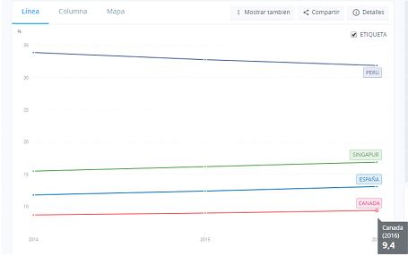
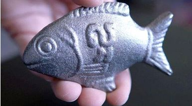

TRATAMIENTO DE LA ANEMIA EN CANADÁ
En Canadá, si nos fijamos en el cuadro siguiente, tiene menos anemia (en niños menores de 5 años) que Perú, España y Singapur, esto es debido a que utilizan el pescadito de hierro.
Este pescadito de hierro pesa 213 gramos y para consumirlo se prepara en un litro de agua y se hierve durante 10 minutos y unas gotas de un limón. Este proceso libera 70 microgramos de sulfato de hierro y no presenta ningún color y sabor. Los pescaditos de hierro son vendidos por una compañía a 25 dólares y si son para fines humanitarios a 5 dólares (en Estados Unidos) y tiene una vida útil de 5 años. En un estudio en Nicaragua, tuvo efectos positivos en niños de 5 a 12 años en comunidades rurales, también se probó en otros países como Camboya, África y tuvo resultados positivos.
